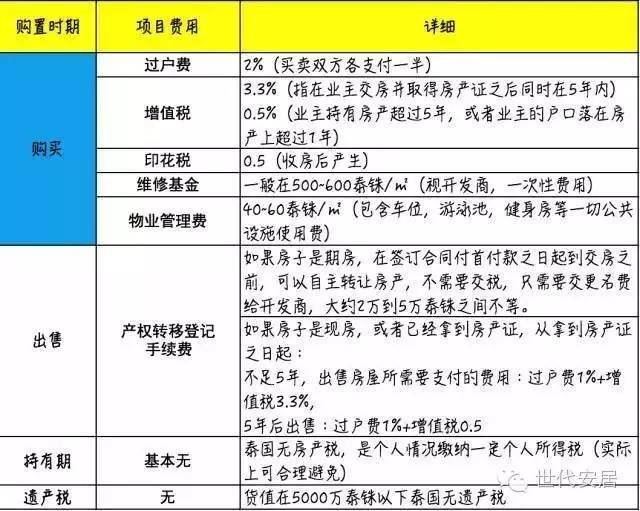

是不是还在想，在国外买房是不是很不方便？ 出租和转售麻烦？ 政策会不会对外国人不利？
1、非泰国籍人不能购买泰国土地，即外国人不能购买带地的永久产权建筑，尤以别墅为主。
2、外国人想买多少公寓都可以，且是永久产权。唯一的限制就是，整栋公寓大楼产权的51%要在泰国公民手中，外籍人士最多购买49%的公寓。
3、外籍人士也可以在泰国购买别墅或土地，并拥有永久产权，但要通过注册泰国公司的形式。在泰国注册公司仅需7天，费用低廉，一般不需要你去实际经营，每年仅需支付一点低廉的公司报帐费用。
4、外国人在泰国买房可贷款，首付根据房价或估值核算，一般是30%。但利率较高，在5%左右。
5、若贷款购买期房，看中房子后就要先交定金（25%-30%），相当于首付。而在交房时，再申请贷款。
6、因为在泰国并没有“房产税”，所以购买泰国的房产，只需要在过户的时候缴纳几种过户税费即可。

1、定金：5万泰铢（定房当日缴纳）+签订认购书+收据。
2、协同银行新开泰国账户。
3、3-4个工作日出购房合同，签署购房合同一式两份，如客户在曼谷便现场签字，如不在，需邮到顾客那里签字，签完后，客户自己保留一份原件，另一份邮给开发商。
4、首付：2周内汇入将钱汇入个人泰国账户，再从个人账户约定金额转入开发商（首付一般是25%—30%）。
5、开发商收楼前提前三个月通知买家尾款时间。
6、收房：待房子办理按揭或全款支付尾款，领取房产证。
A.外汇管制的国家：
1、.需要在泰国工行或中行开通一个账户。
2、以学习、旅游、差旅的名义汇到自己的账户。
3、从泰国账户以买房的名义汇款给开发商。
PS：过户需要外汇证明，所以不能直接在泰国刷卡，并且外汇管制的国家不允许直接买房的名义汇到泰国。
B.非外汇管制国家：
1、直接以购房的名义汇到开发商。
一、贷款和还款币种：新加坡元。
二、贷款年限：10年(若提前还款须在3年后方可申请)
三、贷款资格：
1、非泰国居民，年龄21-65岁；
2、申请人年龄加贷款期限不超过65年；
3、有稳定收入来源，信用良好。
四、贷款利息：
第一年5.25%（固定）
第二年5.75%（固定）
第三年及以上：SIBOR+6.0%
五、贷款金额：
一般为房产评估价或购房价（两者取小）的50%，贷款起点金额100万泰铢，换句话说，房子总价需要在200万泰铢以上。
六、办理流程：
1、申请阶段：准备好相关电子材料，提交工行泰国分行审核，历时大概1天。审核通过后填写贷款申请表、填写开户（还款账户）申请表、填写其他资料，并邮寄相关资料。历时大概1-2月；
2、申请通过后：需要本人及配偶同时到曼谷总部签署借款合同、签署抵押协议、签署其他协议、确认各项费用；
3、到土地厅办理过户及抵押手续：工行泰国放款给开发商、完成房产过户和抵押手续、每月25号前进行还款。
七、汇款流程
1.准备首付款：在工行泰国开立活期账户，用于汇入首付款（也可作为还款账户）可选择新币、泰铢、人民币或美元等任一币种。
2.境外汇款至工行泰国账户：
3.工行泰国收款后开立“结汇单”
“结汇单”会注明购房用途，并作为购房款来自境外的证明向土地局提供，办理房产过户和抵押手续。若首付款汇入泰国其他银行，客户需要向汇入行索取“结汇单”。
4.从国内汇款
如果客户每月从国内汇款到工行泰国还款账户，汇款流程同第2点。
1、自己找中介：支付1个月租金当中介费，租金直接打到客户泰国账户。
2、开发商托管：开发商联系中介出租，支付中介1个月租金，业主只用收租，节省管理时间。
3、ROOM ME 托管：ROOM ME 专业公司托管，租金5：5分，房屋保养、维护等所有问题ROOM ME 公司来做。优点：房屋保养好，折旧少。缺点：5：5分，租金回报平分。